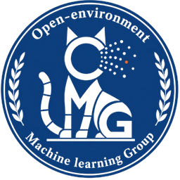

01About Me
Hello! I am Tao Xie (谢涛), a final-year undergraduate in the Outstanding Engineer Class of Automation at Guangdong University of Technology. I am advised by Prof. Yiqun Zhang and co-supervised by Prof. Yiu-ming Cheung in the SIGMTA group at the OMG Lab.
My research focuses on reliable and interpretable time-series learning, especially learning from heterogeneous and sparse temporal observations. My published work spans intrinsically interpretable classification and medical early prediction, with first/co-first-author papers at KDD, IEEE BIBM, and PRICAI. I have also led or served as a core member of several national- and provincial-level undergraduate research and innovation projects.
Outside of research, I enjoy playing basketball and listening to music.
你好！我是谢涛，广东工业大学自动化卓越工程师班本科四年级学生，师从Yiqun Zhang 教授，并接受Yiu-ming Cheung 教授的联合指导，在 OMG 实验室 SIGMTA 课题组开展研究。
目前，我主要关注可靠、可解释的时间序列学习，尤其是异质与稀疏时序观测下的学习问题。已发表工作覆盖内生可解释分类与医学早期预测，并以第一或共同第一作者身份在 KDD、IEEE BIBM 和 PRICAI 发表论文。此外，我还作为项目负责人或核心成员参与了多项国家级及省级大学生科研创新项目。
科研之外，我喜欢打篮球和听音乐。
你好！我是謝濤，廣東工業大學自動化卓越工程師班本科四年級學生，師從Yiqun Zhang 教授，並接受Yiu-ming Cheung 教授的聯合指導，在 OMG 實驗室 SIGMTA 課題組開展研究。
目前，我主要關注可靠、可解釋的時間序列學習，尤其是異質與稀疏時序觀測下的學習問題。已發表工作涵蓋內生可解釋分類與醫學早期預測，並以第一或共同第一作者身分在 KDD、IEEE BIBM 和 PRICAI 發表論文。此外，我還作為項目負責人或核心成員參與了多項國家級及省級大學生科研創新項目。
科研之外，我喜歡打籃球和聽音樂。
02Education
Guangdong University of Technology
Bachelor's degree candidate in Automation · Outstanding Engineer Class
School of Automation · University Town Campus
03Experience

OMG Lab, Guangdong University of Technology
Undergraduate Researcher · SIGMTA Group
Advisors: Prof. Yiqun Zhang and Prof. Yiu-ming Cheung
04Publications
† Equal contribution. * Corresponding author.
05Awards
2026 · 核心成员
2025 · 第二负责人
2025 · 核心成员
2025
2025
2025
累计获得国家级及省级竞赛奖项 5 项（全国一等奖 1 项、全国二等奖 1 项、省级奖项 3 项）。